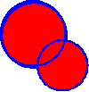
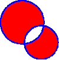
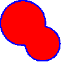
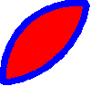
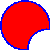

- Kombinovanie
- Kombinovaním objektov vzniká objekt pričom tie časti ktoré sú tvorené párnym počtom vrstiev objektov budú z výsledného objektu odstránené.
- Spájanie
- Majme viaceré prekrývajúce sa objekty. Označme ich a zvoľme nástroj "spojiť objekty".
Výsledkom bude nový objekt, ktorý vznikne zjednotením týchto objektov. Celý nový objekt je jednej farby a je možné navoliť čiaru okolo tohoto nového objektu.
Úloha: Nakreslíme bledomodrého snehuliaka obtiahnutého modrou čiarou- nakreslíme 3 rôzne veľké bledomodré kruhy
- posunieme ich aby sa sčasti prekrývali
- označíme všetky kruhy
- V galérii zvolíme spojiť
- Prienik
- Vytvorí nový objekt vytvorený prienikom všetkých vybraných objektov. Ak prienik neexistuje neurobí nič.
- Orezanie objektov
- Celá akcia spočíva v dvoch krokoch
- vyber objektu/objektov, ktoré majú byť odoberané
- označíme objekt
- zvolíme akciu - "označiť rezací objekt"
- odrezanie
- vyberieme objekty z ktorých sa bude odrezávať
(rezacie objekty môžu byť súčasťou-nemajú vplyv na výsledok) - teraz keď je navolený rezací objekt a zvolený objekt/objekty je sprístupnený nástroj "orezať objekty". Jeho volbou sa zo zvoleného objektu odoberie rezací objekt.
- vyberieme objekty z ktorých sa bude odrezávať
- vyber objektu/objektov, ktoré majú byť odoberané
|  |  |  |  |  |
| pôvodné objekty | skombinované | spojené | prienik | orezané |
|